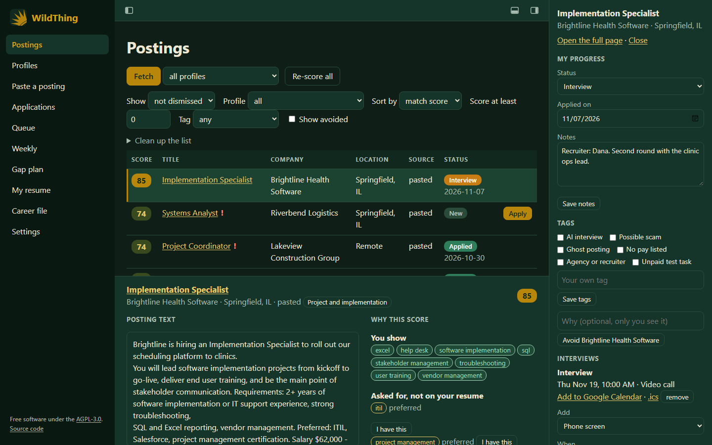
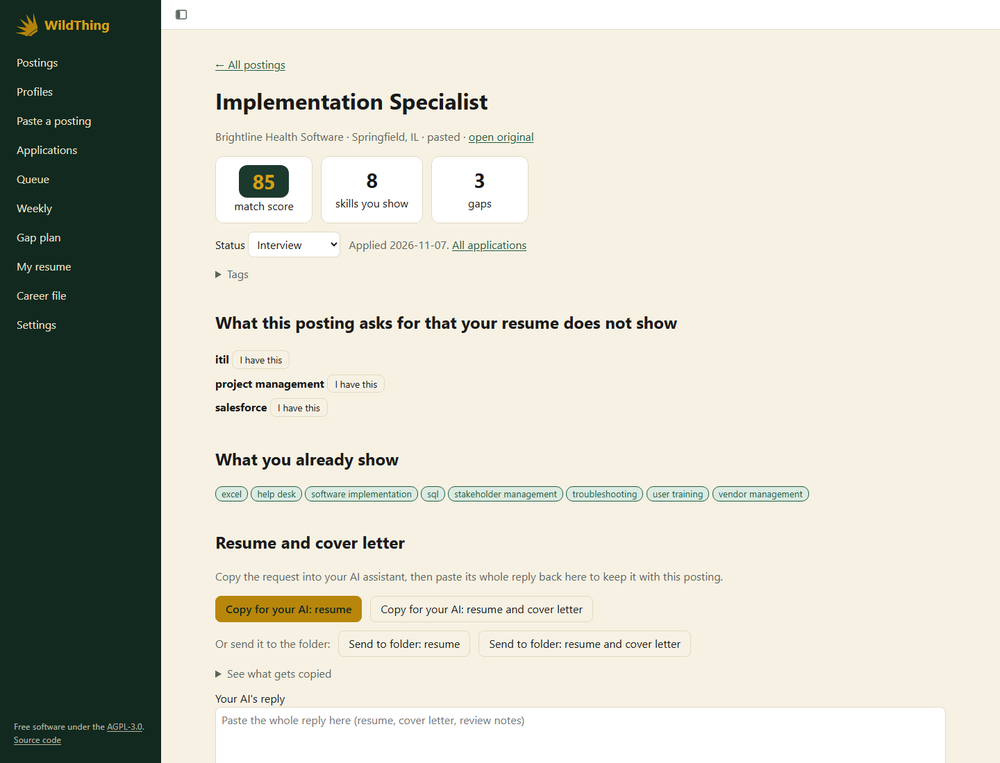
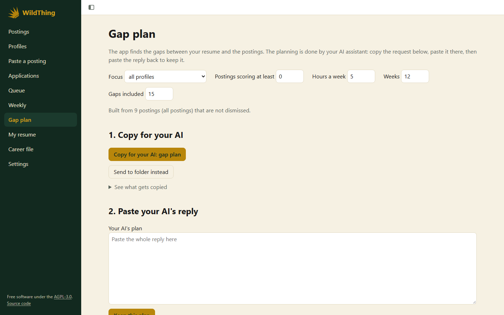
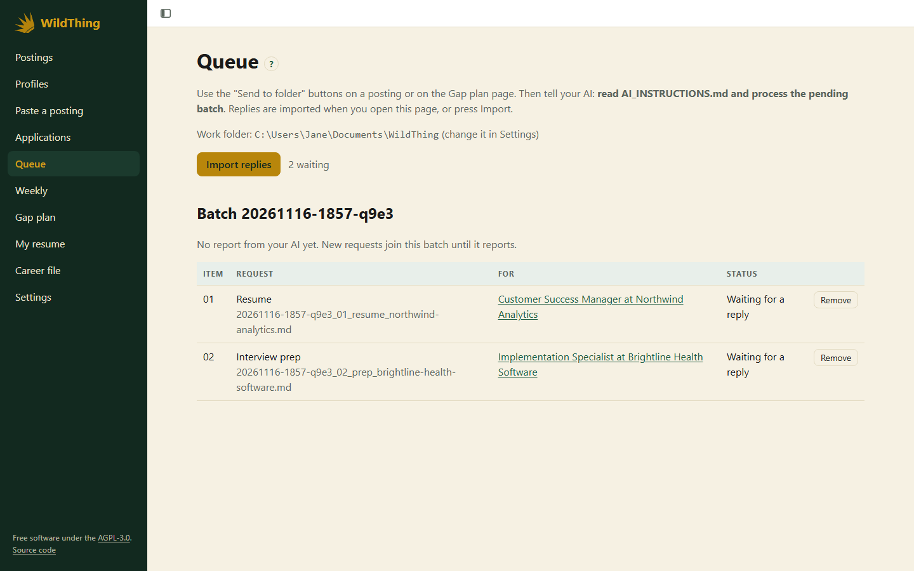
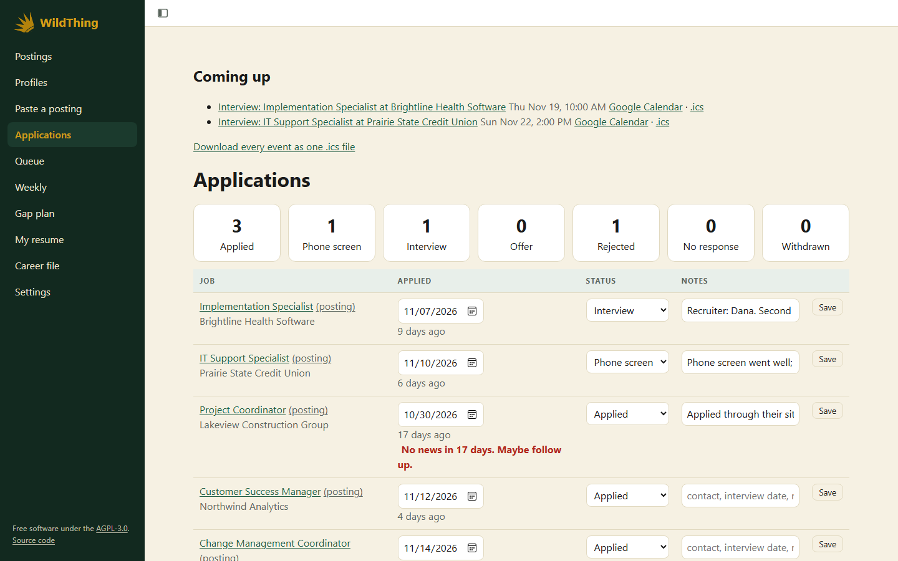
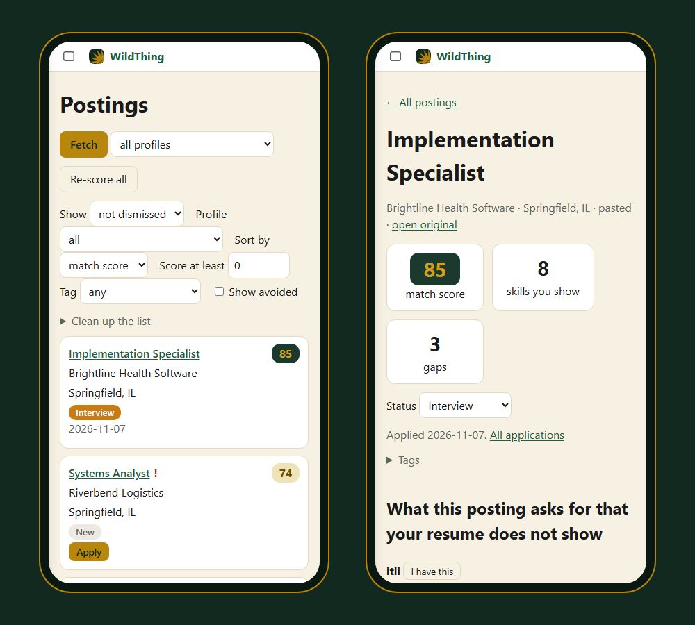

Change Management · Kansas City, MO
Standing up a system I didn’t choose, then training the people who had to live with it, showed me firsthand where that kind of change can go wrong. I’m working toward shaping those plans, not just carrying them out.
A job-search app for Windows and Android. It finds job postings, scores each one against a resume, shows what is missing, hands the writing to the user’s own AI assistant, and tracks every application through to an offer.

All screenshots use made-up demo data: a sample user and fictional companies.
One button fetches postings from several sources, including major job boards, USAJOBS, and company boards. Each source can be switched on or off. Any posting can also be pasted in, or shared to the phone app from a browser. Duplicates listed on several sites are merged into one posting that keeps every link, and postings outside the places the user can work are dropped.
Each posting gets a 0 to 100 match score from the user’s master resume and target job titles. The posting page shows exactly why: the skills the resume shows, and what the posting asks for that it doesn’t.

A skill the resume doesn’t mention but the user really has can be marked “I have this” and counts from then on. The Gap plan page ranks the gaps across every posting by how often each appears and whether it is required, then asks the user’s AI for a study plan sized to the hours available each week.

Each posting can produce a tailored resume, a cover letter, or interview prep. WildThing never calls an AI itself. It writes a request, either to copy and paste or as a file in a shared folder, and any assistant that can read and write files picks it up. The replies are filed with their postings, and every request tells the AI to use only facts from the user’s own resume.

Each application moves through Saved, Applied, Phone screen, Interview, and Offer, with dates and notes. Applications with no news after 14 days are flagged for a follow-up, and interviews get calendar links. A weekly summary counts what was sent and what moved forward, as plain text ready to paste into a check-in.

The Android app has the same features as the desktop app, and the two stay in step through Google Drive or the user’s own WebDAV server. On narrow screens the menu slides over the page and postings become cards.

The desktop app runs locally in Python with a browser interface and a local database. The Android app is written in Kotlin. Both were built with Claude.
A working prototype of an AI assistant for the volunteer chapter leaders of an international member association. Isa answers from the association’s approved documents only, shows the source behind every answer, and hands anything it can’t answer to a person.
Screenshots come from the prototype, with sample people and test data. The client’s name is replaced with generic wording.
The client panel selected our solution as the winner. Its feedback singled out the onboarding guide, the content dashboard and the branding.